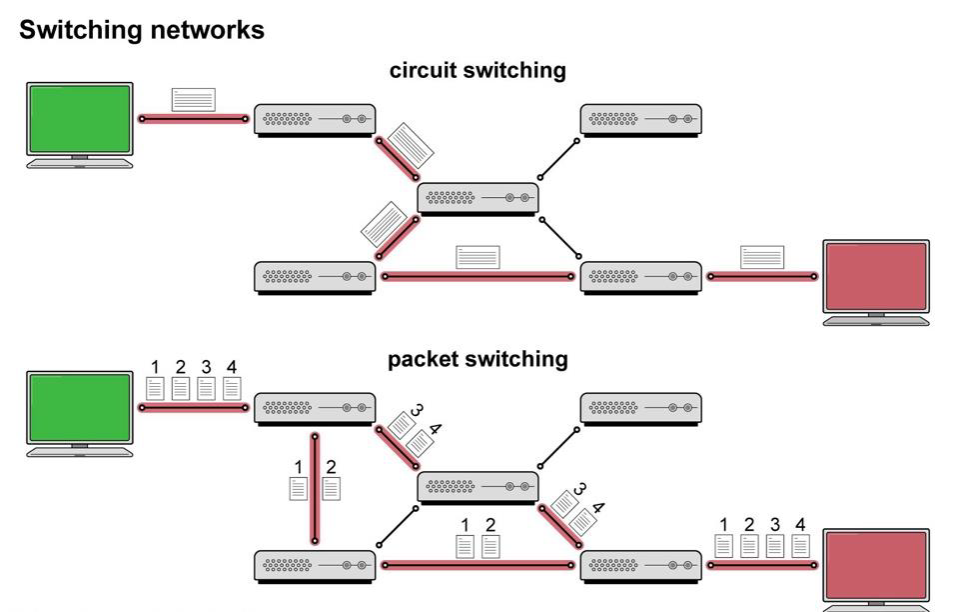

Networks – Notes
| Benefits of a Network | Benefit to Company and Employees | Drawbacks |
|---|---|---|
| Users can share resources such as printers and internet access | A company does not need to buy as much equipment, reducing costs | Higher cost – networks require servers, cables, network cards, and network operating systems |
| Users can share files | Teams can work on the same files at the same time, improving collaboration | Maintenance and support – networks are complex and need specialist setup and ongoing management |
| Software only needs to be installed once | Saves time and resources by distributing software to all computers centrally | Errors or misconfigurations can affect many users at once |
| Users can access files from any computer on the network | If one computer breaks or is busy, work can continue on another machine | Security risks – hackers may target the network to access sensitive data |
| Centralised backups | Files can be restored easily if they are deleted or corrupted | If the server fails, access to data and backups may be lost |
| Central network management | Network managers control access, permissions, and can audit user activity | Network failures – a single fault can disrupt the entire network |
| Centralised security management | Updates, patches, and virus protection are kept up to date across all machines | A successful attack can affect all connected devices |
Packet Transmission
| Aspect | Packet Switching | Circuit Switching |
|---|---|---|
| Definition | Data is broken into packets and transmitted independently. | Data is transmitted in a continuous stream using a dedicated communication path. |
| Efficiency | Very efficient use of the network as each channel is only used for a short time. | Lower efficiency as a dedicated path is maintained even when no data is being transmitted. |
| Reliability and Error Detection | If an error occurs, only a small identifiable packet is affected and can be retransmitted easily. | Less flexible in handling network failures as the dedicated path must be re-established if broken. |
| Interception | More secure from interception because packets can take different routes. | Less secure as all data travels along one dedicated data stream. |
| Use Cases | Best for data that can tolerate some delay, such as emails and web pages. | Ideal for real-time services like voice calls or video conferencing that require low latency. |
| Topic | Details |
|---|---|
| Packet Structure |
Each packet is composed of:
|
| Header Information |
|
| Steps of Sending a Packet |
|
| Exam Tips |
|
Data Transmission and Error Detection
A parity bit is an extra bit added to a group of data bits to help detect errors during transmission. It is a simple form of error detection used in digital communication systems.
How Parity Bits Work:
Even Parity:
The parity bit is set so that the total number of 1s in the byte (including the parity bit) is even.
Odd Parity:
The parity bit is set so that the total number of 1s in the byte (including the parity bit) is odd.
Example:
- Suppose we have a 7-bit data: 1011001
- Using even parity, we count the number of 1s (which is 4). Since it’s already even, the parity bit is 0.
- The transmitted byte becomes: 10110010
- If an error occurs during transmission (e.g. a bit flips), the receiver counts the 1s and checks if the parity is still even. If not, an error is detected.
Limitations:
- Parity bits can detect single-bit errors but cannot correct them.
- They fail to detect errors when two bits flip (even number of errors).
Parity checking is a simple but effective way to detect errors in data transmission systems like serial communication, RAM storage, and networking protocols.
When a message is transmitted, it is liable to corruption.
Checksum
A checksum is an error-detection method used to ensure that data sent over a network or storage system is received correctly. It works by calculating a sum of all the bytes before transmission and sending this sum (checksum) along with the data. The receiver then performs the same calculation and checks if the result matches the sent checksum. If they match, the data is correct; if not, an error has occurred.
How Checksum Works with Sending Bytes
Step 1: Sender Computes the Checksum
The sender takes all the data bytes and adds them together.
Given Bytes (8-bit each):
01101101 (109 in decimal)
10000001 (129 in decimal)
10001000 (136 in decimal)
109 + 129 + 136 = 374
To calculate the checksum:
Add the bytes and ignore the carry to keep the checksum as 8 bits
10111010
The sender sends:
01101101 10000001 10001000 10111010 (checksum)
The checksum value is then sent along with the data.
Step 2: Data and Checksum are Sent
- The data bytes and the checksum are transmitted to the receiver.
Step 3: Receiver Verifies the Checksum
- The same sum is done at the receiving end and the results compared.
Why Use Checksum?
- Detects errors in data transmission.
- Simple and efficient for detecting single-bit and some multi-bit errors.
- Cannot correct errors — only detects them.
Checksum is widely used in networking (TCP/IP), file transfers, and storage systems to ensure reliable data communication.
Serial vs Parallel Transmission
Serial Transmission
Serial transmission sends data one bit at a time using a single wire.
Example:
Sending 101111010 as:
1 → 0 → 1 → 1 → 1 → 1 → 0 → 1 → 0
Slower but reliable for long distances.
Parallel Transmission
Parallel transmission sends multiple bits at the same time using multiple wires.
- Example: Sending 101111010 all at once through 8 wires.
- Faster but can cause errors over long distances (over 10m).
- Used for printers and scanners that need fast data transfer but are close to the computer.
| Basis for Comparison | Simplex | Half Duplex | Full Duplex |
|---|---|---|---|
| Direction of Communication | Unidirectional | Two-directional, one at a time | Two-directional, simultaneously |
| Send / Receive | The sender can only send data | The sender can send and receive data, but one at a time | The sender can send and receive data simultaneously |
| Performance | Worst performing mode of transmission | Better than Simplex | Best performing mode of transmission |
| Example | Keyboard and monitor | Walkie-talkie | Telephone |
Networking Hardware
| Hardware | Function |
|---|---|
| Router |
|
| Cable / Ethernet |
|
| Gateway |
|
| Bridge |
|
| Firewall |
|
| Wireless Access Point (WAP) |
|
| Repeater |
|
| Switch |
|
| Network Interface Card (NIC) |
|
Protocols and TCP/IP stack
Remember This Definition
A protocol is a set of rules and standards that define how data is transmitted and communicated between devices in a network.
Why?
Setting standards and rules that all manufacturers of hardware and software follow is important for a number of reasons:
- Standards describe accurately and unambiguously how information is transmitted.
- A manufacturer’s products will work successfully with other manufacturers’ products if they all follow the same standards.
- By defining a set of standards, you provide a framework within which manufacturers can design new, successful products.
- Standards break down complex ideas into smaller, methodical, easier-to-understand components.
Successful communication includes:
- What baud rate will be used – it determines how fast data is sent and received.
- What error checking will be used – checksums or parity checking.
- Whether software or hardware handshaking is to be used – handshaking is the process of establishing communication between devices.
- What character set is to be used (ASCII or UNICODE).
- How many bits will be used for data.
- How many control bits will be used to control data transfer (start bit – signals the beginning of a data packet, stop bit – marks the end of the data packet).
Logical and Physical Protocols
A logical protocol refers to a set of rules and standards that define how data is transmitted, processed, and understood within a network at a logical level, without focusing on the physical hardware or infrastructure.
For example: IP, TCP, HTTP.
Physical protocols define how data is actually transmitted through the physical medium. Deals with the hardware and physical signals.
For example: Ethernet and Wi-Fi.
Common Network Protocols
- HTTP (Hypertext Transfer Protocol) – Sends web pages over the internet at the application layer.
- HTTPS (Secure HTTP) – Encrypts HTTP data using TLS/SSL for secure web browsing.
- FTP (File Transfer Protocol) – Transfers files between a client and server. FTPS adds security.
- TCP (Transmission Control Protocol) – Ensures reliable, ordered data transmission.
- UDP (User Datagram Protocol) – A faster alternative to TCP. Focuses on speed rather than guaranteed delivery, ideal for video streaming, online gaming, and VoIP calls.
- IP (Internet Protocol) – Handles addressing and routing of data packets over networks.
- SMTP (Simple Mail Transfer Protocol) – Sends emails between clients and servers.
- POP3 (Post Office Protocol v3) – Downloads emails from a server to a local device.
- IMAP (Internet Message Access Protocol) – Allows email access and synchronisation across multiple devices.
TCP/IP
TCP/IP (Transmission Control Protocol / Internet Protocol) is a set of networking protocols that work together to send data across networks. It is divided into four layers:
| Layer | Description |
|---|---|
| Application Layer | The top layer that determines the correct protocol based on the application (e.g. HTTP for web browsing, FTP for file transfers). |
| Transport Layer |
|
| Network Layer |
|
| Link Layer |
|
Client-server vs Peer to Peer
Client–Server
 |
Peer-to-Peer
 |
|---|---|
Description
|
Description
|
Server
|
Capabilities
|
Clients
|
Pros
|
Pros
|
Cons
|
Cons
|
Network Security
| Issue | Description | Prevention |
|---|---|---|
| Malware (Viruses, Worms, Trojans) | Malicious software that can damage or steal data. | Install and update antivirus software, avoid suspicious downloads. |
| Phishing Attacks | Fraudulent emails or websites trick users into revealing sensitive information. | Educate users, use email filters, verify sources before clicking links. |
| Denial of Service (DoS) & Distributed DoS (DDoS) | Overloading a network or server to disrupt services. | Use firewalls, rate limiting, and DDoS protection tools. |
| Man-in-the-Middle (MITM) Attacks | Attackers intercept communication to steal or alter data. | Use encryption (SSL/TLS), VPNs, and secure authentication methods. |
| Unauthorized Access | Hackers gaining access to sensitive systems or data. | Implement strong passwords, multi-factor authentication (MFA), and access control. |
| Data Breaches | Unauthorized data access leading to leaks or theft. | Encrypt sensitive data, regularly update security policies, and monitor access logs. |
| Ransomware Attacks | Hackers encrypt data and demand payment for release. | Maintain regular backups, update software, and avoid suspicious email attachments. |
| Weak Passwords | Easily guessed passwords lead to unauthorized access. | Enforce strong password policies and MFA. |
| Wi-Fi Security Threats | Unsecured Wi-Fi networks allow unauthorized access. | Use WPA3 encryption, strong passwords, and hide SSID if necessary. |
| Social Engineering | Manipulating people to gain access to confidential information. | Conduct security awareness training and verify unknown requests. |
| Outdated Software & Patches | Unpatched vulnerabilities can be exploited by attackers. | Regularly update and patch all software and hardware. |
Keeping Data Secure
Data Protection and Network Security
The Data Protection Act 1998 requires organisations to keep data safe. Security measures include firewalls, proxy servers, encryption, and authentication.
Firewall
A firewall blocks unauthorised access to a system. It allows only approved users to access certain data while keeping others out.
Proxy Server
A proxy server sits between users and the main server. It checks user permissions before granting access to data, adding an extra layer of security.
How it Works:
- A user requests data.
- The firewall checks if the user has permission.
- If valid, the proxy server retrieves the data and sends it back.
- Users cannot access the main server directly.
VPN
Public Wi-Fi is risky, so encrypt your communications for safety.
Best solution: Use a VPN (Virtual Private Network).
- Encrypts all your internet activity.
- Hides your IP address (useful for accessing geo-restricted content).
- Costs just a few pounds per month.
How it works:
- Install VPN software.
- Connect to a public network.
- The VPN verifies your identity and encrypts data.
Important Note
No system is 100% secure!
- Check VPN terms — some providers log data.
- Employees at VPN companies could still pose risks.
DNS
The Domain Name System (DNS) translates human-readable website addresses (URLs) into numerical IP addresses, which computers use to communicate over the internet. The process involves multiple steps:

| Step | Action |
|---|---|
| 1. User enters URL | The browser sends a request to resolve the domain name to an IP address. |
| 2. DNS Resolver Checks Cache | If the IP is found in the local cache, it is returned immediately. Otherwise, the request continues. |
| 3. Query to TLD Name Server | If the resolver lacks the IP, it queries the TLD Name Server (e.g. .com, .org). |
| 4. Query to Authoritative Name Server | If necessary, the request is forwarded to the Authoritative Name Server holding the actual IP. |
| 5. IP Address Returned | The authoritative server responds with the correct IP address. |
| 6. Browser Connects to Website | The browser uses the IP to establish a connection and load the web page. |
| 7. Error Handling | If no match is found, an error is returned (e.g. “Site Not Found”). |